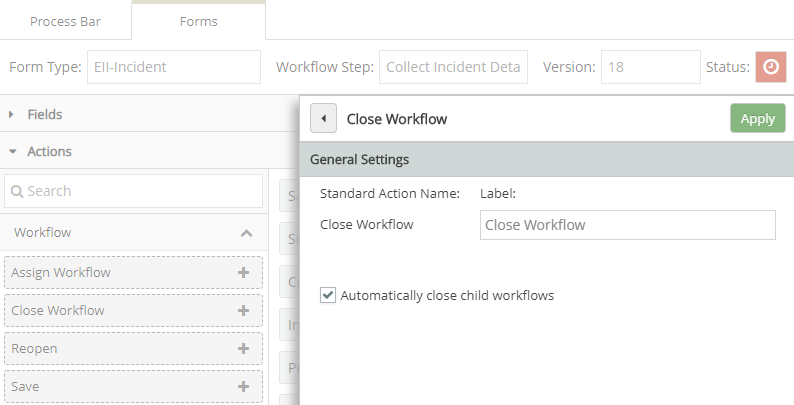

The Action buttons on the form define what functions can be performed on the workflow. Default buttons include:
Create, Save, Assign Workflow, Submit, Close, Reopen, and buttons for possible step transitions and initiation of child workflows. The wording on the buttons (label) may be edited.
Reopen Workflow button will appear only if the workflow is closed, in place of all other actions. It will be displayed only if the current user has the appropriate permission (Reopen permission on the workflow type).
Close Workflow button has an option to close all child workflows automatically when the parent workflow is closed. If you want to allow child workflows to remain open after the parent is closed, uncheck this option.

There are a number of ways you can customize Actions to control the behavior in the app.
Remove an action that you don't want available to any users at this step. For instance, if you do not want users to be able to reassign the step, you can simply remove the Reassign button from the form.
Create a condition to control the visibility of an action button, dependent on the value of another field.
Define what happens when initiating a new workflow.
All Actions have these properties:
Initiator Name: Not editable. This is defined by the workflow type.
Label: The text that appears on the button. It can be different than the name, which is the default.
Additional options are available on the action buttons used to initiate child workflows.
Options for initiating a child workflow:
Select the action button for the child workflow to see the following options :
Number of Children: 1 or Many. If 1 is selected, users will only be able to create one child workflow of this type.
Child Workflow is required: Select this to require that a child workflow be created on this step.
Initiator Popup: If Off, the child workflow will be created without a pop-up asking for assignee before creating the child workflow. The workflow will be assigned to all users in the allowed role and created with the default values for workflow name and due date.
Workflow Name : Field is disabled if Initiator Popup is Off. Otherwise, the transition pop-up will allow the user to edit the default workflow name for the child workflow before it is created. You can also specify a default workflow name.
Default Value: Optionally, you can set the default Workflow Name using text or macros or a combination of text and macros. Type "{" in the box to view and select a macro. You may concatenate macro values in the name.
Due Date: If this field is checked, the transition pop-up will allow the user to edit the default due date for the child workflow before it is created. You can also set a due date automatically with these options:
Other Custom Field Value: If you select this option, you can then select a date field on the form whose value will be used.
Days after Creation: After checking the field, enter the number of days after the date of child workflow creation that the workflow is due.
Assignee for Log Incident Details Step: Visible on Popup is disabled if Initiator Popup is Off. If Initiator Popup is On and User Specified is selected, the transition pop-up will allow the user to select the assignee of the child workflow before it is created. The assignee field will be a multi-select box which displays the list of possible groups and assignees, where groups can be expanded so the user can select an individual member. If the All role Members button is selected, the transition pop-up will have all role members selected by default, and the user may choose to deselect specific users or groups. If this value is false, the assignee will be blank and users can be selected from the permitted users in the system.